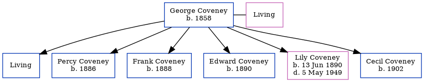

George James Coveney 1858 -
[ Home ] | [ Calendar ] | [ Surnames Index ] | [ Family History ], George Coveney, the husband of Maria Rolfe (the first cousin three-times-removed on the father's side of Nigel Horne), was born in Hythe, Kent, England in 18581 and married Maria (with whom he had 6 children: Henry George, Percy James, Frank Albert, Edward S, Lily Maria and Cecil Fredrick, along with 1 surviving child) at St James, Dover, Kent, England on Feb 3, 18782.
Throughout his life, he lived at Cheriton Street, Cheriton, Kent on Mar 31, 19011; and at High Street, Cheriton, Kent on Apr 2, 19113.
Children
- Percy James was born in 1886
- Frank Albert was born in 1888
- Edward S was born in 1890
- Lily Maria was born on Jun 13, 1890
- Cecil Fredrick was born in 1902
Citations
- 1901 England, Wales & Scotland Census - Findmypast (was age 43 and the head of the household)
- England & Wales Marriages 1837-2005 - Findmypast
- 1911 Census for England & Wales - Findmypast (was age 53 and the head of the household)
Media
1911 England, Wales & Scotland Census Transcription - GBC-1911-RG14-04647-0873-1
Family Tree
Generated by Ged2Site. Last updated on Jul 20, 2025